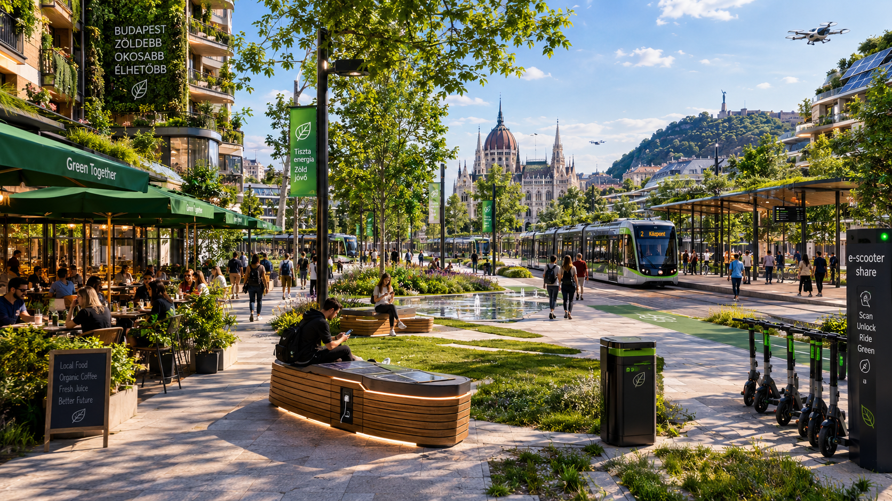
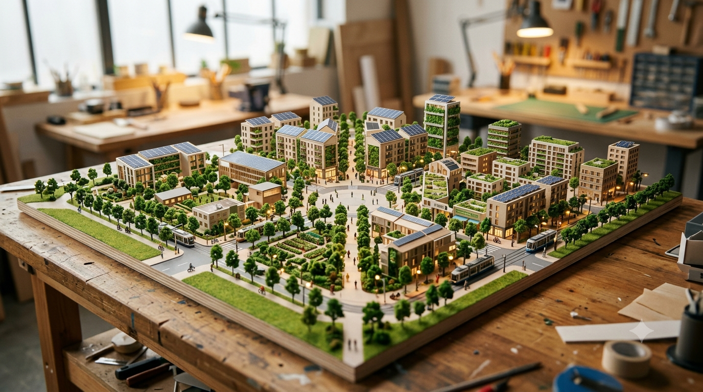
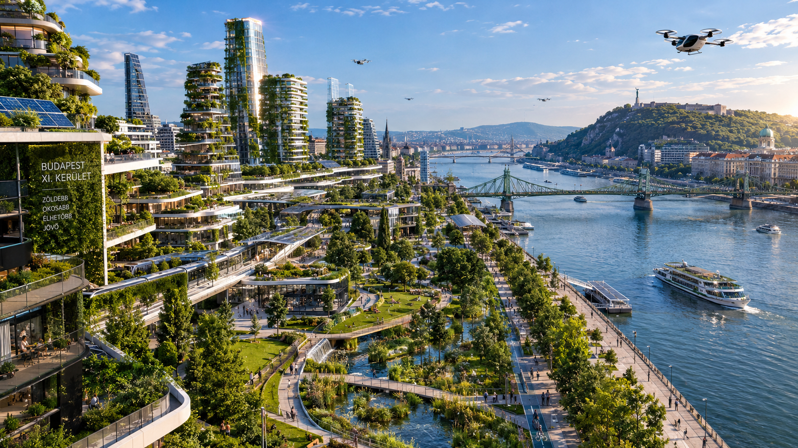
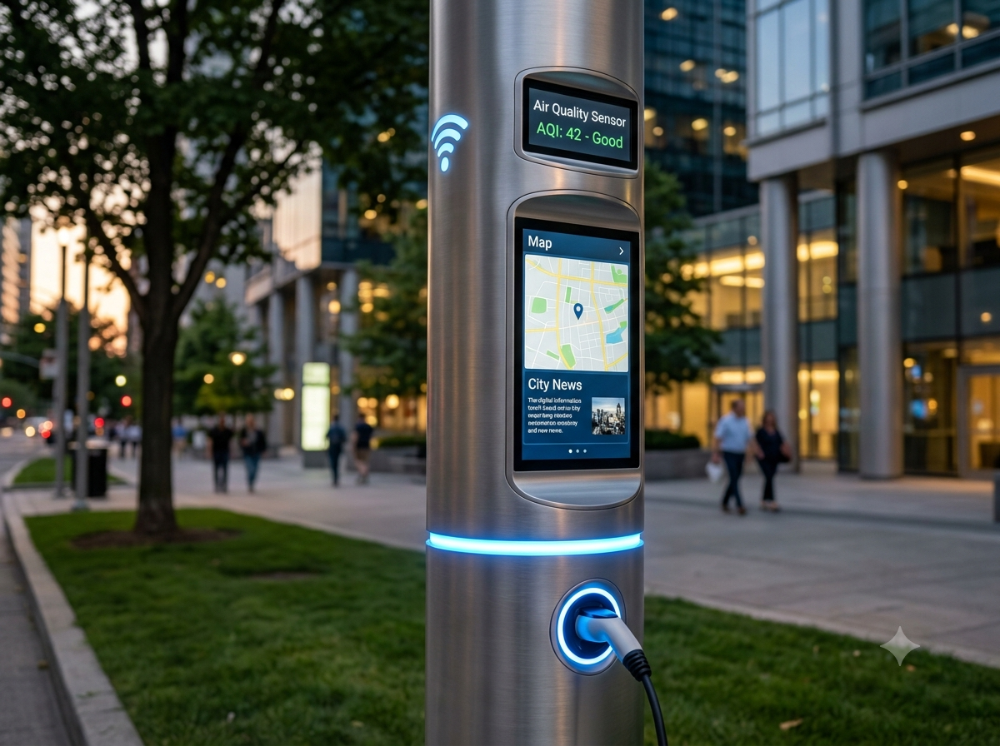
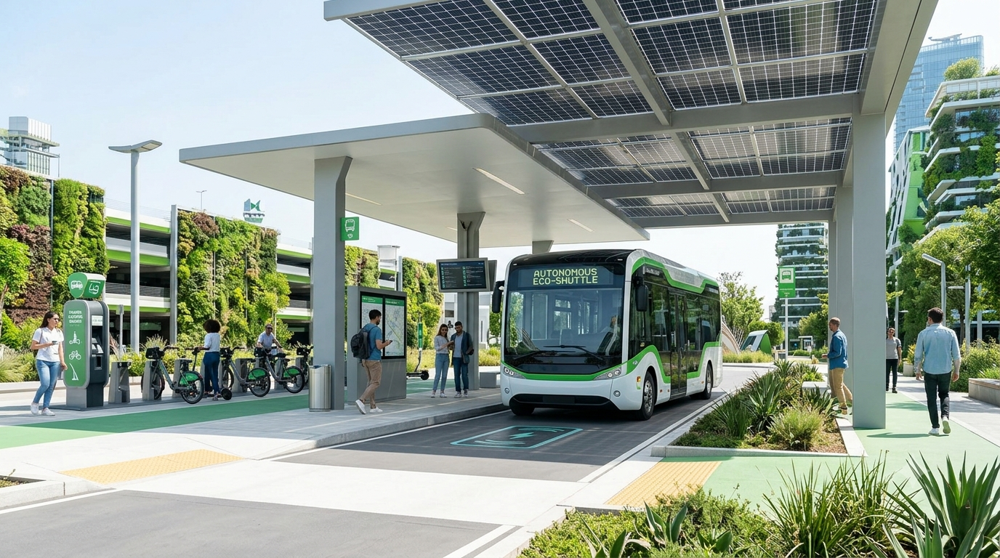
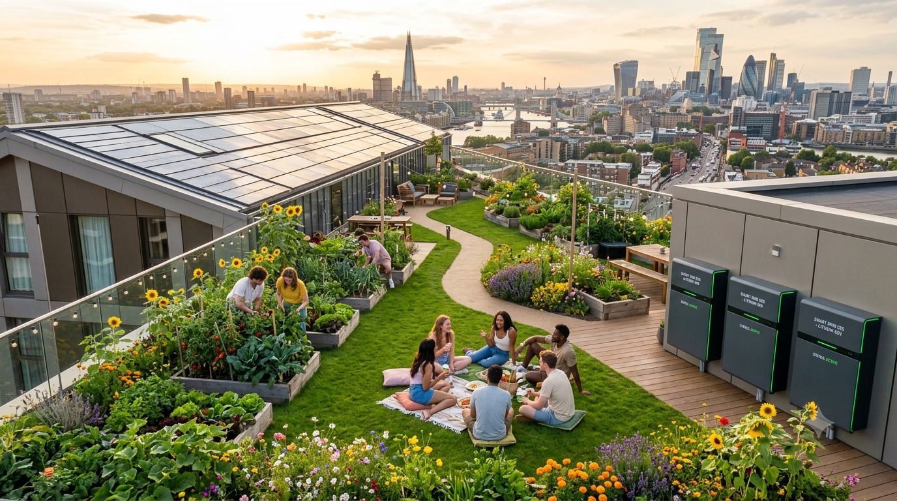
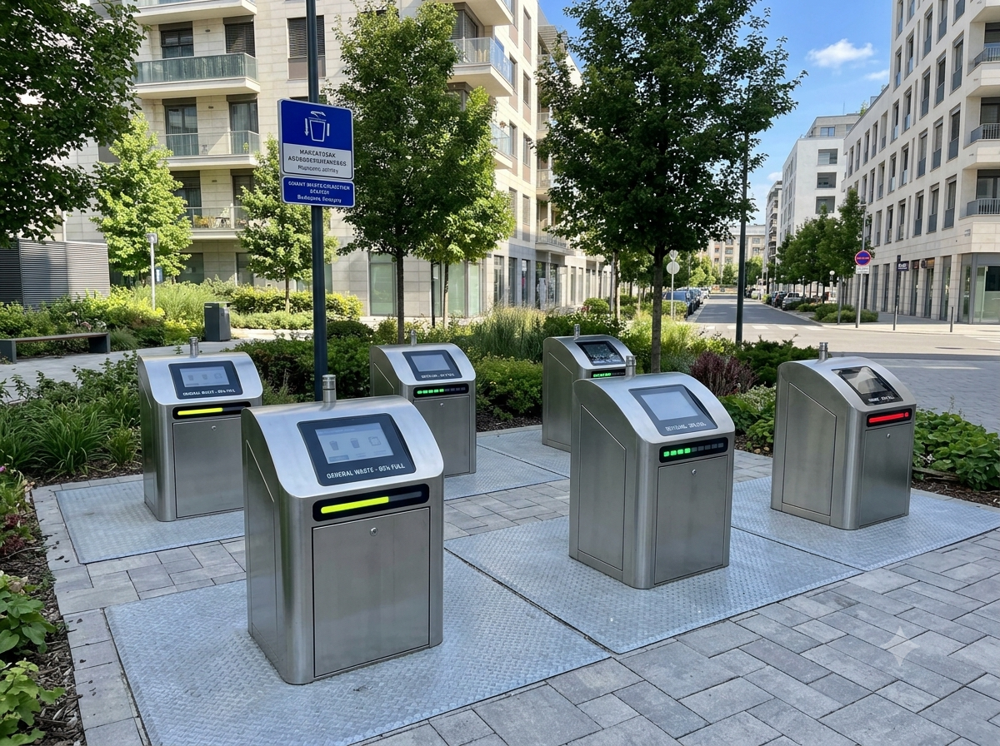

Túlmelegedő utcák
Árnyék, növényzet és hűvösebb közterek.

A JÖVŐ LAKÓNEGYEDE · BUDAPEST XI.
Közelebb a mindennapokhoz.
Több hely az életnek.
01 · MIÉRT ÚJBUDA?
Árnyék, növényzet és hűvösebb közterek.
Helyben megtartott, lassabban elvezetett víz.
Közeli szolgáltatások, biztonságos gyalogos és kerékpáros kapcsolatok.
A teljes kerület a hosszú távú jövőkép. Az első fejlesztés egy kisebb mintaterület. Terület: KSH; népesség: a feladat kerekített kiindulóadata.
02 · TÉRBELI KONCEPCIÓ
A meglévő Újbudára építünk. A szolgáltatásokat közelebb hozzuk, a központokat zöld útvonalakkal kapcsoljuk össze.
Meglévő csomópontok · tervezett zöld és kerékpáros kapcsolatok
Sematikus zónaterv, nem méretarányos.

03 · SZIVACSVÁROS
A burkolat, a növényzet és az épület vízrendszere együtt működik.
Helyi talaj- és közművizsgálat alapján méretezve. A zöldfelületek az elvezető rendszerrel együtt működnek.

04 · ENERGIA ÉS TECHNOLÓGIA
Cél: alacsonyabb kibocsátás és rezsi. A napelemek mellett megmarad a hálózati kapcsolat; a nettó zéró hosszú távú cél.

05 · KÖZLEKEDÉS
Sürgősségi és szükséges szállítási hozzáférés megmarad. Autonóm busz: későbbi, felügyelt próba lehetősége.

06 · KÖZÖSSÉG
A jól működő negyedben a közös tereknek gazdája és használója is van.


07 · MEGVALÓSÍTÁS
Mintaterület kiválasztása, épület- és közműfelmérés, lakossági egyeztetés, kiinduló mérések.
Szakaszos kivitelezés, üzembe helyezés és legalább egy teljes év működési vizsgálata.
Új területek csak értékelt eredmények, helyszíni tervek és elérhető finanszírozás alapján.
Szemléltető többéves ütemezés. A bővítéshez előre rögzített műszaki, használati és költségcélokat kell teljesíteni.
08 · SZEMLÉLTETŐ KÖLTSÉGKERET
Épületek, közterek és közművek összehangolt átalakítása.
Az első mintaterület kerete.
A 2,5 milliárdos program része.
Fiktív, szemléltető felosztás; nem kivitelezői árajánlat. A pontos költség és a finanszírozási modell a helyszíni vizsgálat és a részletes terv után készülhet el.
09 · A KÖVETKEZŐ LÉPÉS
Víz, energia és közösség.
Együtt kipróbálva, együtt mérve.
Partnereket keresünk a pilot előkészítéséhez.
Pataky Dániel · Papp Gábor Áron · Kiss Virág · Dévényi Donát